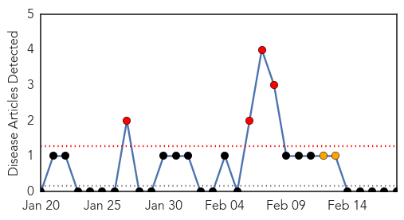
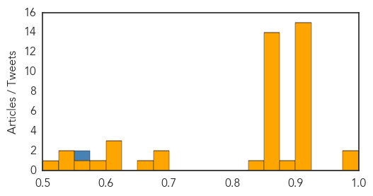

Pertussis
30-Day Web Trend
4 alerts, 2 warnings

30-Day Twitter Trend
0 alerts, 0 warnings

Article Locations

Article Confidences

Top Articles:
-
No articles found for Feb 18, 2014
Top Tweets:
-
No tweets found for Feb 18, 2014
Unknown
30-Day Web Trend
0 alerts, 7 warnings
30-Day Twitter Trend
1 alerts, 0 warnings

Article Locations
Article Confidences
Top Articles:
- 0.984
- 3 more H7N9 cases reported in 3 different provinces
- 0.975
- First case of porcine virus detected on P.E.I.
- 0.917
- Chicago Tribune
- 0.917
- Chicago Tribune
- 0.917
- Chicago Tribune
- 0.917
- Chicago Tribune
- 0.917
- Chicago Tribune
- 0.917
- Chicago Tribune
- 0.917
- Chicago Tribune
- 0.917
- Chicago Tribune
- 0.917
- Chicago Tribune
- 0.917
- Chicago Tribune
- 0.917
- Chicago Tribune
- 0.917
- Chicago Tribune
- 0.917
- Chicago Tribune
- 0.917
- Chicago Tribune
- 0.910
- The world windows to Thailand
- 0.876
- A simple tummy bug to some but fatal to 500,000 impoverished children each year
- 0.866
- Ukraine opposition leader arrives at president's office for talks
- 0.866
- U.S. urges Ukraine's president to restart talks with opposition -White House
- 0.866
- Two more protesters killed in Ukraine
- 0.866
- Ukraine's Yanukovich to meet opposition leaders on Wednesday
- 0.866
- Germany warns Ukraine gov't against sliding back into violence
- 0.866
- Egypt militants warn tourists to leave country or face attack
- 0.866
- A ragpicker boy jumps onto a moving train in search of plastic bottles for reselling, India
- 0.866
- ANALYSIS-Egypt's energy quagmire could sink Sisi
- 0.866
- Thai protester killed by gunfire in Bangkok clashes -medical center
- 0.866
- Coal mine blast kills seven in Ukraine
- 0.866
- Three Thai police injured in Bangkok street clashes-witnesses
- 0.866
- Sinai-Based militant group claims responsibility for Egypt's tourist bus blast
- 0.858
- News Scan for Feb 18, 2014
- 0.857
- Goat plague outbreak confirmed in Inner Mongolia CCTV News
- 0.849
- African swine fever confirmed in Poland :: The Baltic Course
- 0.679
- African Swine Fever Virus Detected in Poland
- 0.677
- Did deadly pig virus come from contaminated feed? CFIA conducting tests
- 0.654
- Ticks may cause double trouble, scientists find
- 0.624
- Ticks May Cause Double Trouble, Stanford Scientists Find
- 0.613
- Birth Defects In Rural Washington Stun Experts
- 0.612
- Cervical cancer could be prevented by an HIV drug
- 0.578
- 'Zim beef might be banned in EU again'
- 0.560
- Poland struck by first cases of African swine fever
- 0.534
- HIV drug used to reverse effects of virus that causes cervical cancer
- 0.529
- Zimbabwe's President in Singapore for eye surgery - News
- 0.514
- La conférence du CESE lance un appel pour un nouveau partenariat mondial afin d'éradiquer la pauvreté et d'assurer le développement durable
Top Tweets:
- 0.563
- RT: CDC protects from killer threats: Flu Abx emerging infections foreign diseases now domestic & diseases from travel htt…